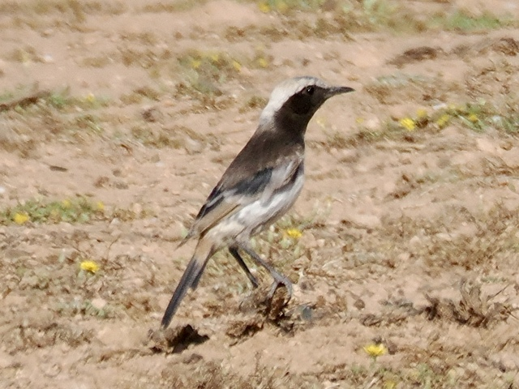
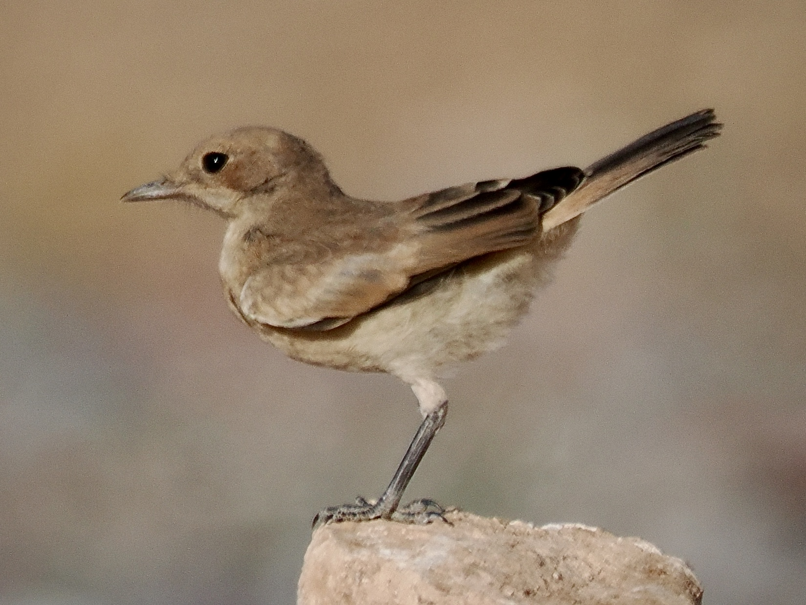
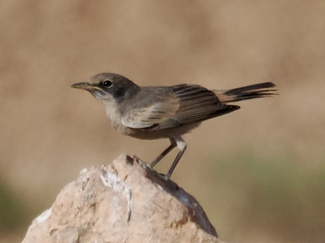

Red-Rumped Wheatear
Oenanthe moesta
Order: Passeriformes
Family: Muscicapidae

Wheatear of the desert. Male has a silver crown, black face, black back, and white belly. Red rump is more like pink or orange, something like #E0A392, and is most visible in flight.

Female lacks the silver and black and is mostly the colour of the red rump. These birds are quite abundant in the famed dump in the Tagdilt track, where they feed on insects spawned from the rubbish, but rather uncommon elsewhere.

Juvenile male still retains the yellow gape and is gradually developing the adult colours.